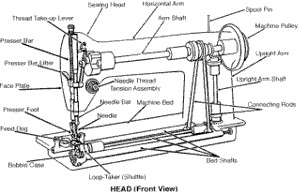

Consultoria Eficiente
Hoje me deparei com um especialista nos guiando (eu e minha esposa) para a
melhor solução de um problema.

. Ele fez exatamente isso:
- Entendeu o que queríamos.
- Descobriu o que precisávamos.
- Apresentou a melhor alternativa, devidamente justificada.
- Apresentou alternativas não recomendáveis.
Minha esposa precisava de uma máquina de costura overlock, e sendo nós desconhecedores do assunto (eu muito mais, pois ela está estudando), fomos à Internet "saber tudo". São muitas as marcas e modelos e características e preços e opiniões.
Ficamos mais confusos.
Mas conversando com quem costura ou está no mercado de costura (técnicos, lojistas de material de costura), houve uma unanimidade: uma loja, especificamente um lojista.
Bem recomendado por todos, uma coisa nos intrigava. Ele cobra mais caro para consertar máquinas que ele não tenha vendido. Pensávamos ser isso uma forma de forçar a compra com ele. Além da unanimidade que sempre intriga...
Nada como uma boa conversa ao vivo!
Fomos à loja ele fez exatamente como descrito no início desse texto:
Entendeu o que queríamos
Com muita habilidade procurou saber exatamente o que queríamos. Foi nos guiando até conseguir de nós o que exatamente estávamos buscando.
Descobriu o que precisávamos
Uma vez entendido o que queríamos, vieram os questionamentos sobre os motivos da nossa escolha específica, bem como sobre pra que usaríamos a máquina. Nesse ponto ele já tinha nos arrancado qual era o nosso real problema a resolver, e uma vaga ideia sobre nossa percepção de preço. Apresentou a melhor alternativa, devidamente justificada
Com todos os nossos segredos desvelados, ficou fácil para ele apresentar a melhor solução. Devidamente justificada. Apresentou alternativas não recomendáveis
Ou seja, apresentou mais argumentos a favor da melhor alternativa, descartando - de forma muito polida - a nossa ideia original, e a alternativa de uma máquina muito mais cara.
Ofereceu mais do que esperávamos
- A máquina será revisada, lubrificada e entregue em nossa casa, com bancada e pedal regulado conforme preferências de minha esposa.
- A máquina tem garantia da loja (ele não quer perder o título de melhor e mais honesto técnico na região).
- A esposa dele dará instruções sobre como preparar a máquina para trabalhar (fios e agulhas: "fiamento").
Conclusão: ele nos educou
Recebemos informações técnicas e, no geral, um conhecimento bem mais amplo do que tínhamos antes de entrar na loja. Todas as dúvidas foram honestamente sanadas, as alternativas foram exploradas, preconceitos com marcas, origem e modelos foram limpos.
O melhor foi conversarmos com um técnico e uma costureira, ou seja, abordando todos os aspectos de nosso problema. Trabalho de equipe.